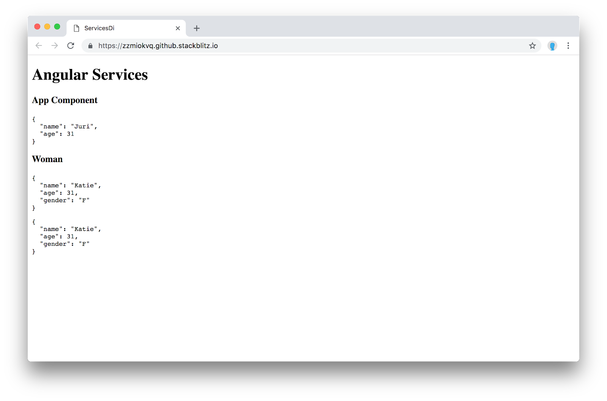
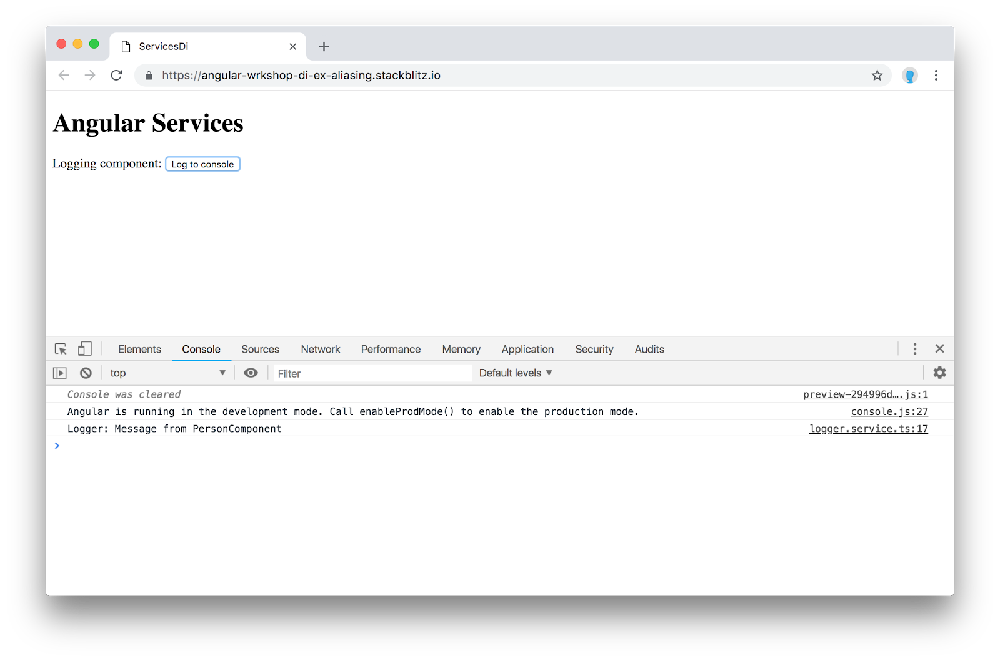
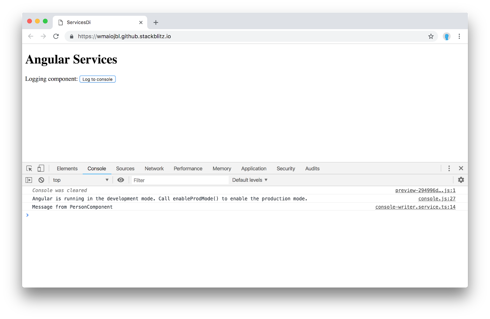
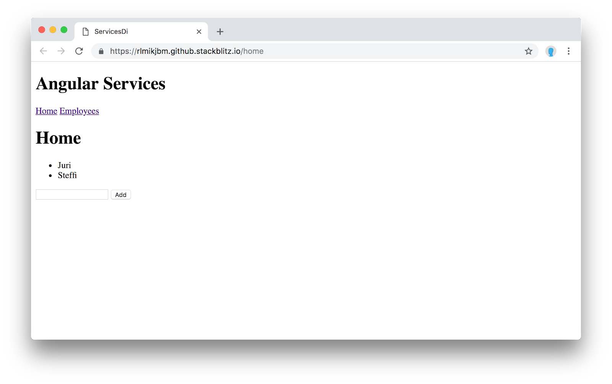

Similar to other (more backend) languages and frameworks, Angular has a dependency injection mechanism.
Why Dependency Injection (DI)?
Using a DI mechanism has a variety of advantages. We don't have to instantiate the objects by hand. This can be quite important especially when it comes to instantiating an entire tree of services with all of it dependencies. Moreover, the DI container controls the lifetime of our services and thus helps us improve the memory management as we don't get duplicate instances of the same service in memory (if we don't want to).
Finally, it greatly improves testability by allowing us to arbitrarily inject "mock instances" of a given service during testing.
What you'll learn
- What Angular Services/Providers are and what they are good for.
- How to register services to the dependency injection container and how to retrieve them
- About aliases, factories and values
- About the lifecycle of a service and how we can change it
What you'll need
- A valid code editor, ideally Visual Studio Code
- Git and a recent version of Node (v9+) and NPM (v5+)
You should see the following screen:

The example is structured in the following way.
import { Component } from '@angular/core';
@Component({
selector: 'app-root',
template: `
<h1>Angular Services</h1>
<h3>App Component</h3>
<app-person></app-person>
<app-woman></app-woman>
`
})
export class AppComponent {}As you can see we have the AppComponent that loads two different components, the <app-person> and the <app-woman>. Both components (as can be seen from the screenshot above) show the same data which they get from the PersonService. To illustrate this example, the <app-woman> component also includes the <app-person> component again, which is why the data is shown twice.
Inspect the source code to understand the starting example.
Exercise
Create a new WomanService. The new service should inherit from the already existing PeopleService, thus expose the same public API. However, in the WomanService, you should overwrite the getPerson() function in the following way:
getPerson() {
const person = super.getPerson();
person.name = 'Katie';
person.gender = 'F';
return person;
}The WomanService should be injected in a way that the <app-woman> component doesn't get the global PeopleService instance, but rather a dedicated instance of the newly created WomanService.
The end result should look as follows:

Don't look at the solution if you haven't tried by yourself first ;)
You should see the following screen:

Clicking the "Log to console" button gives a message "Logger: Message from PersonComponent". The PersonComponent basically gets a LoggerService injected and simply invokes its log(..) function to print to the console.
import { Component, OnInit } from '@angular/core';
import { LoggerService } from './services/logger.service';
@Component({
selector: 'app-person',
template: `
<div>
Logging component:
<button (click)="doLog()">Log to console</button>
</div>
`,
styles: []
})
export class PersonComponent implements OnInit {
constructor(private logger: LoggerService) {}
ngOnInit() {}
doLog() {
this.logger.log('Message from PersonComponent');
}
}Exercise
There is already an existing NewLoggerService present. Register the service in a way that the entire application now gets the NewLoggerService instance instead of the existing LoggerService.
Upon successful completion you should see the following result in your console when clicking the log button:

Don't look at the solution if you haven't tried by yourself first ;)
When starting the example you see the following

The example is currently broken and part of the exercise is to fix it. In the example there is a LoggerService and ConsoleWriter. The LoggerService takes a boolean indicating whether the logging is enabled or not, and a ConsoleWriter instance which is responsible for writing the log.
import { Injectable } from '@angular/core';
import { ConsoleWriter } from './console-writer.service';
@Injectable()
export class LoggerService {
constructor(private isEnabled: boolean, private writer: ConsoleWriter) {}
log(msg: string) {
if (this.isEnabled) {
this.writer.write(msg);
}
}
}Exercise
Register the LoggerService in a way that
- It gets a true as boolean value, thus activating the logging
- It gets an instance of a ConsoleWriter
Hint: use a factory to instantiate the LoggerService. Do not instantiate the ConsoleWriter by yourself (although in this simple example you totally could), but rather get it via the dependency injection mechanism.
Upon successful completion you should see the following result in your console when clicking the log button:

Don't look at the solution if you haven't tried by yourself first ;)
In this example we have a small mini-app that navigates between the screens using the Angular router. We have a HomeComponent that gets activated when navigating to /home and a module EmployeesModule that gets lazily loaded by the app when navigating to /employees.
Moreover we have a PeopleModule that contains some common functionality, such as a PeopleService holding the app state as well as a PersonListComponent visualizing the people from the PeopleService.
Both the HomeComponent (registered directly on the AppModule) as well as the EmployeesComponent internally use the PeopleListComponent to visualize a list of people. For being able to do so, they both import the PeopleModule in their imports section.

Inspect the source code.
Problem
If you played with the example, you might have already spotted the "problem". We mentioned that both screens use the PeopleModule and its PeopleService and PeopleListComponent to visualize a list of people. The PeopleService is meant to hold our application state. However, if we add a new person on the "home screen" and then jump to the "Employees screen" by clicking the link, we get a different list.
The reason being is that we have two different instances of the PeopleService in memory, both holding their respective list of people. Most of the times, this is not the desired behavior.
Why?
Angular has a root dependency injector, which holds all of the services. When a new service is requested by some Component or another Service, Angular walks up the dependency tree until the root injector to get the correct instance. Lazy loaded modules have their injector instance. Thus, since in our example we import the PeopleModule on both, the AppModule as well as the EmployeesModule, the PeopleService (contained in the PeopleModule) will be registered on both dependency injectors.
Registering the PeopleModule only at the AppModule level is not a solution, because in that way we wouldn't be able to consume the PeopleListComponent in the EmployeeModule.
Let's see who to solve this.
One way to solve this issue is by registering the shared module's (PeopleModule) providers only once, at the AppModule level. Using the ModuleWithProviders interface we can separate the registration of the providers and the components.
Open the PeopleModule and implement the so-called forRoot() pattern.
...
@NgModule({
imports: [CommonModule],
declarations: [PeopleListComponent],
exports: [PeopleListComponent]
})
export class PeopleModule {
static forRoot(): ModuleWithProviders {
return {
ngModule: PeopleModule,
providers: [PeopleService]
};
}
}Note that there is no more providers: [..] part in the @NgModule. It has been moved to the forRoot() function.
While we do not need to change anything in the EmployeesModule, open the AppModule and rather than simply importing the PeopleModule, we call the forRoot() function.
...
@NgModule({
declarations: [AppComponent, HomeComponent],
imports: [..., PeopleModule.forRoot()],
bootstrap: [AppComponent]
})
export class AppModule {}In this way the providers are only registered in the AppModule.
Here's a working solution.
Starting with Angular version 6, we have a new way of registering services, namely with the providedIn: ‘root' option.
Remove the PeopleService registration from the PeopleModule and use the new providedIn option for registering services:
import { Injectable } from '@angular/core';
@Injectable({
providedIn: 'root'
})
export class PeopleService {
...
}If you now test the example again, it should be working as intended. Aside from some other advantages, the providedIn option makes sure the service exists exactly once, even when lazy loaded in various modules.
See the running solution here:
You did it!! Quickly go through these questions to check your knowledge. You should be able to answer most of these by now.
Check your knowledge
- What are services in Angular? How are they defined?
- What do we understand under the term "dependency injection"? Why is it useful?
- How are services discovered by the DI mechanism? Where can we define it?
- What is the visibility of a service defined on
NgModule? - How can we limit the visibility and lifetime of a service to a dedicated part of our application?
- How can we alias the concrete instance of a service to an existing one?
- How can we overwrite a given service with an existing, predefined value object?
- What is a service factory, how is it defined and why is it useful?
- How can we pass further dependencies from the DI to a service factory?